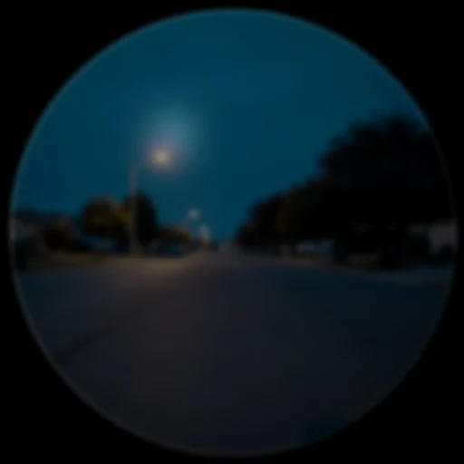

Attention and focus
Two opposing forces, one policy: DreamLayer must be able to interrupt you out loud when a moment genuinely demands it, and must be able to shut up completely when you demand that. The attention policy decides the first; Focus mode enforces the second; the proactive-cue picker tunes everything in between.
The hark — "Listen!" and "Watch out!"
A hark is the system tapping you on the shoulder: one line, one ring, an earcon, a haptic.

orchestrator/attention.py: AttentionPolicy.evaluate(ctx, commitments) scans
the same live Context the anticipation engine sees and produces at most a
handful of ranked alerts:
| Trigger | Level | Example clue |
|---|---|---|
| An event you must leave for within 6 minutes | watch-out (urgent) | "4 min to Standup" — "leave for Studio B" |
| Someone you owe is in view right now | listen | "You owe Maya — send the lease" |
| You are walking away from a place that holds your anchor | listen | "You're leaving your bike" |
| A commitment inside its 48-hour slip window | listen | "send the lease by Friday" |
The discipline that keeps it from nagging:
- One hark at a time —
attention_tickspeaks only the single most important fresh alert, watch-outs ranked first. - A 30-minute per-key cooldown — the same alert cannot repeat inside half an hour, and a key is only marked consumed if the hark actually spoke (a veil- or focus-suppressed hark does not burn the alert).
- The hark call itself adds a second 120-second cooldown across all harks.
- Normal harks are held during Focus; urgent watch-outs pierce it. Everything is silenced by the Veil.
set_attention(False)(the phone's "Proactive alerts" toggle, or "Hey Juno, stop keeping watch") mutes the policy entirely.
The heartbeat: pulse(context) — or the background start_pulse(context_fn,
interval=15.0) — runs anticipation and attention together on one context
snapshot. Seam: the live context feed (place, people in view, clock)
that a device build supplies to the pulse.
Focus mode
set_focus(minutes) — default 25 by voice ("Hey Juno, focus mode") —
turns the interruptions down while capture keeps running. That second
half is the difference from Incognito, which pauses capture itself.
Held while Focus is active: anticipation cards, live caption display, message pop-ups, fact-check cards, delivery reads, answer-ahead, commitment-capture confirmations, and normal harks. Still running underneath: the ledger, the user model, commitment tracking, and recall on demand. Still allowed through: urgent watch-outs, and anything you explicitly ask for.
clear_focus() ends it early; focus_active() reports it; turning Focus on
from the phone also unlocks the Saga's Deep Focus badge.
The proactive-cue picker
Finer than on/off: set_cue(kind, on) mutes any of the three anticipatory
kinds — event, person, place — before the engine's ranking pass, so
you can keep "leave in 8 minutes" while silencing arrival reminders. The
phone nests these three under its Proactive cards toggle. cue_kinds()
reports current state.
The deviation nudge
Related but distinct: the Tell engine (tell_check) compares fresh
transcript against your prior commitments and raises a DeviationAlertCard
when the new words contradict the old plan — before-versus-now across a
dashed divider, with a severity dot.
The Glance Arbiter — which lens owns a look
The hark decides when to speak; the Glance Arbiter
(orchestrator/glance.py) decides which lens a look belongs to — without a
mode picker, because a menu is friction on glasses. On a look, glance(frame)
classifies what's in view and every candidate lens bids; the arbiter fires
the clear winner, offers a one-tap chooser when it's genuinely ambiguous, or
does nothing.
It reuses the Object Lens provider-registry shape, lifted up a level: there,
providers declare matches(sighting) and the registry merges rows into a
panel; here, candidates declare bid(reading, ctx) and the registry ranks them
into one decision.
- Two-tier read. A free coarse pass (
classify_coarseover cheap on-device cues — a face flag, a text-density estimate, a form grid, a question mark, a language guess) runs first; only when it can't tell a form from a question from prose (is_ambiguous) does the hub spend the Brain's vision tier for a fine read. The big model is used when it changes the answer, not on every glance. - Fire vs offer. The top bid fires outright when it beats the runner-up by the gap (or a spoken intent forced it, or it's the only bidder); otherwise a GlanceChoiceCard offers the close contenders ("Answer it · Fill it in · Translate"). A pick runs that lens and teaches the arbiter.
- It learns you. Per-scene priors (
GlancePriors) reinforce the lens you keep choosing for a kind of scene, so tomorrow's ambiguous look leans your way. They persist as a small JSON on the hub beside the vault (glancepriors.json, the same pattern as the user model) — read once at start, rewritten on each pick, in-memory only when there's no vault. The local file stays the source of truth so a glance never waits on the network; the dict is still serialisable, so a Mac Brain can later mirror it across hubs. - Spoken steer. A recent "what's the answer / how do I fill this / explain this" biases the very next look to that lens for a few seconds — say it, then look.
- Calm. Hysteresis holds a fresh decision through a debounce window, so a glance wandering across a page doesn't flip lenses. Veiled ⇒ nothing.
The candidate lenses today: Person (a face → Social Lens), Scholar (answer / form / plain-words), TasteLens (a shelf or menu → the pick), Rosetta (foreign text → translate), and Juno (an object, or a weak fallback to name what's here). The chooser, when a look is genuinely ambiguous:

Who gets to interrupt — the summary
| Signal | Veil down | Focus on | Normal |
|---|---|---|---|
| Urgent watch-out hark | silent | speaks | speaks |
| Normal hark | silent | held | speaks |
| Anticipation cards | silent | held | shown |
| Message pop-ups | silent | held | shown |
| Fact-check / answer-ahead / delivery reads | silent | held | shown (if enabled) |
| Live caption display | silent | hidden (ledger keeps) | shown |
| Things you ask for (recall, rewind, Juno) | recall of kept memories still answers | answered | answered |